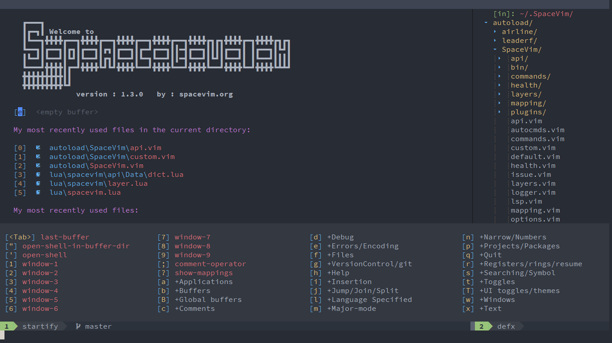

掌握编程工具的常用快捷键是一个提高工作效率的关键

1. 项目介绍
四大核心思想：记忆辅助、可视化交互、一致性、社区驱动。
Spacevim 是一个社区驱动的模块化 Vim 发行版。 它管理层中的插件集合，这些插件帮助收集相关的包，以提供类似于 ide 的特性。 Spacevim 不仅仅是一个 vimrc，而是一个最终的 Vim 配置，它包含许多内置特性。

# 项目目录结构
├─ .ci/ build automation
├─ .github/ issue/PR templates
├─ .SpaceVim.d/ project specific configuration
├─ autoload/SpaceVim.vim SpaceVim core file
├─ autoload/SpaceVim/api/ Public APIs
├─ autoload/SpaceVim/layers/ available layers
├─ autoload/SpaceVim/plugins/ buildin plugins
├─ autoload/SpaceVim/mapping/ mapping guide
├─ doc/ help(cn/en)
├─ docs/ website(cn/en)
├─ wiki/ wiki(cn/en)
├─ bin/ executable
└─ test/ tests2. 特性功能
其实 vim 中特性功能在 ide 中早已实现，使用 vim 主要是为了不用鼠标，解放双手！
- [1] 使用 toml 作为默认配置 -> toml
# 下面是一个使用 toml 作为 SpaceVim 配置的例子
# All SpaceVim options below [options] snippet.
[options]
# Set SpaceVim theme. By default colorscheme layer is not loaded.
# If you want to use more colorschemes, please load the colorscheme
# layer.
colorscheme = "gruvbox"
colorscheme_bg = "dark"
# Disable guicolors in basic mode, many terminal do not support 24bit
# true colors
enable_guicolors = false
# Disable statusline separator, if you want to use other value, please
# install nerd fonts
statusline_separator = "nil"
statusline_inactive_separator = "bar"
buffer_index_type = 4
windows_index_type = 3
enable_tabline_ft_icon = false
enable_statusline_mode = false
statusline_unicode_symbols = false
# Enable Vim compatible mode, avoid changing origin Vim key bindings
vimcompatible = true
# Enable autocomplete layer
[[layers]]
name = 'autocomplete'
auto-completion-return-key-behavior = "complete"
auto-completion-tab-key-behavior = "cycle"
[[layers]]
name = 'shell'
default_position = 'top'
default_height = 30- [2] 多点编辑 -> Iedit 模式
- [3] 高亮光标符号 -> Highlight
- [4] 全局搜索 -> FlyGrep

- [5] 助记键绑定导航 -> 替换 SPC 导航键
- [6] 异步插件管理器 -> dein.vim
- [7] 异步 todo 管理器 -> 显示当前项目中的所有 todo 标记和 title
3. 使用概览
快捷键是代码编辑器的灵魂，没有灵魂多可怕呀？
3.1 工具常用配置
- [1] 通过 git 更新
# 通过Git更新SpaceVim
git -C ~/.SpaceVim pull- [2] 高级配置参数
# 在SpaceVim中，"s"按键不再删除光标下的字符
# 它是窗口相关快捷键的前缀，可以在配置文件中设置成其它按键
# 通过如下修改配置文件，可以恢复"s"按键原先的功能或修改为其他按键
windows_leader = ""
windows_leader = "w"
# 在SpaceVim中，f、F、t和T按键默认被用作为语言专用的前缀键
# 通过如下修改配置文件，可以禁用此选项，恢复默认功能
enable_language_specific_leader = false
# 在SpaceVim中， "q"按键被设置为了智能关闭窗口
# 通过如下修改配置文件，可以恢复"q"按键原先的功能或修改为其他按键
windows_smartclose = ""
windows_smartclose = "x"
# 禁用语言专用的前缀键
[options]
enable_language_specific_leader = false- [3] 工具相关快捷键
| 编号 | 快捷键 | 对应功能说明 |
|---|---|---|
| 1 | :h SpaceVim |
访问 SpaceVim 帮助文档 |
| 2 | :SPUpdate |
通过插件管理器更新插件和工具 |
| 3 | :SPDebugInfo |
获取 SpaceVim 运行时日志 |
| 4 | :h SpaceVim-config |
查看所有的 SpaceVim 配置选项(额外加了 g:spacevim_前缀) |
3.2 添加和禁用插件
- [1] 添加自定义插件
# 如果你需要添加github上的插件
# 只需要在SpaceVim配置文件中添加[[custom_plugins]]片段
# 可以通过":h dein-options"查阅dein插件管理器的更多参数配置
[[custom_plugins]]
name = "lilydjwg/colorizer" # 配置github地址
on_cmd = ["ColorHighlight", "ColorToggle"] # 延迟加载
merged = false- [2] 禁用特定插件
# 如果需要禁用某个插件(~/.SpaceVim.d/init.toml)
# 通过配置文件的[options]片段中的disabled_plugins来操作
[options]
# 每一个选项为插件的名称，而非github仓库地址
disabled_plugins = ["clighter", "clighter8"]3.3 配置启动函数
- 写好启动函数之后，需要在项目配置文件中进行添加。
# 需要使用启动函数(~/.SpaceVim.d/init.toml)
# 通过配置文件的[options]片段中的配置这两个选项来指定函数名称
# 读取用户配置后执行的函数: bootstrap_before
# 将在autocmd之后执行的函数: bootstrap_after
[options]
bootstrap_before = "myspacevim#before"
bootstrap_after = "myspacevim#after"- 启动函数文件放置在项目目录
autoload文件夹内，才可以被执行。
# 路径地址: ~/.SpaceVim.d/autoload/myspacevim.vim
function! myspacevim#before() abort
let g:neomake_enabled_c_makers = ['clang']
nnoremap jk <esc>
endfunction
function! myspacevim#after() abort
iunmap jk
endfunction- 如果需要添加自定义以
SPC为前缀的快捷键，则需要使用bootstrap function，在其中加入如下代码段。
function! myspacevim#before() abort
call SpaceVim#custom#SPCGroupName(['G'], '+TestGroup')
call SpaceVim#custom#SPC('nore', ['G', 't'], 'echom 1', 'echomessage 1', 1)
endfunction4. 私有模块
模块化开发是一个良好的架构方式 => 官方插件模块
使用模块的方式来组织和管理插件，将相关功能的插件组织成一个模块，启用/禁用效率更加高。同时也节省了很多寻找插件和配置插件的时间。
SpaceVim 是一个社区驱动的 Vim 配置集合，通常一个 Vim 的配置集合包含了诸多的 Vim 插件以及相关配置。而 SpaceVim 是以模块的方式来组织和管理这些插件以及相关的配置。默认情况下，这些模块都是禁用的，用户可以根据自己需要或是项目需要 来载入指定的模块以获取相关功能。
通过模块的方式管理插件和相关配置，为使用者节省了大量的搜索插件和调试插件的时间。用户仅仅需要根据自己的实际需求，来启用相关模块。比如，当我需要频繁调用终端时，可以启用终端支持的 shell 模块。
- 启用模块
以 shell 模块为例，启用该模块，并且通过设定一些模块选项，指定终端打开位置为顶部，高度 30px。
[[layers]]
name = "shell"
default_position = "top"
default_height = 30- 禁用模块
在 SpaceVim 内，默认启用了一些模块，当你需要禁用某一个模块时，需要指定模块选项 enable 为 false。enable 这一选项缺省为 true，所以启用模块时，这一选项可以省略。
[[layers]]
name = "shell"
enable = false需要我们注意的是，在 SpaceVim 中，一个模块就是一个单个的 Vim 脚本文件，例如，autocomplete 模块存储在 autoload/SpaceVim/layers/autocomplete.vim 中，在这个文件内有以下几个公共函数。
# 返回该模块插件列表
SpaceVim#layers#autocomplete#plugins()
# 模块相关设置
SpaceVim#layers#autocomplete#config()
# 模块选项设置函数
SpaceVim#layers#autocomplete#set_variable()